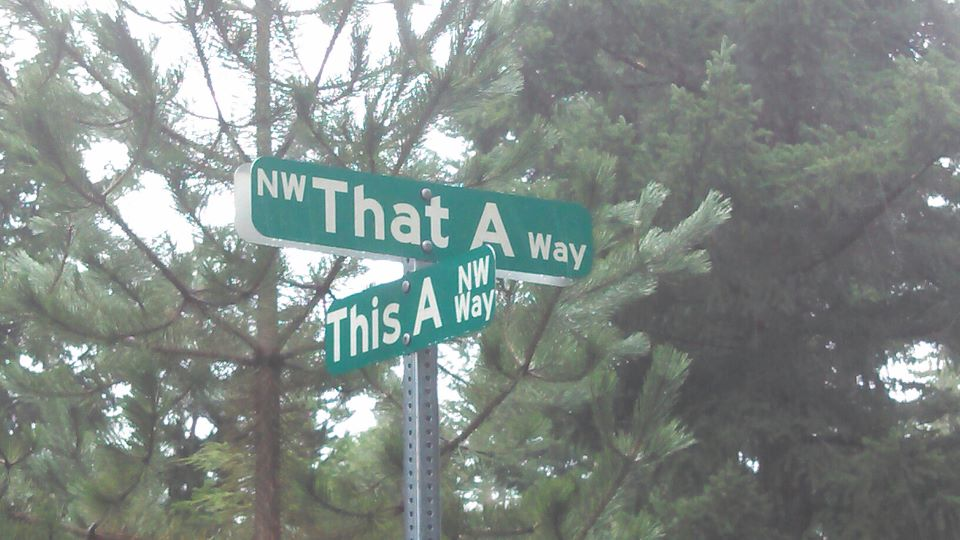

Community Groups Present Collective Demand for Transit Equity
NAACP, South Madison Unite!, South Metropolitan Planning Council, Madison Area Bus Advocates, Southdale Tenants’ Association
June 3, 2022

Background We agree that our transit system needs a comprehensive redesign. The current Metro system isn’t equitable. High-efficiency transit corridors that shorten wait times and make cross-town travel possible would be a huge benefit. We’re told we have to sacrifice accessibility for these gains. But Metro’s supporting data about who will sacrifice or benefit are ambiguous and biased. And with the written and spoken testimony of hundreds of community members who currently rely on the bus and who oppose the redesign, we are left wondering: Who will the new system serve? The premise of the Draft Plan, to build a more equitable transit system, is only as good as the public engagement on which the plan is based. Metro’s plan for public engagement has leaned heavily on arms-length methods of outreach, flyers, and emails to local organizations and on virtual meetings. This approach focused its reach on communities that were already enfranchised and it disadvantaged those that were not. Meeting packets have been released after deadlines, sometimes just prior to a hearing. Videos of past hearings haven’t been uploaded in a timely fashion. Public hearings have been scheduled in close succession. Translation and interpretation for non-English speakers has been unreliable, and often not provided at all; the bulk of meetings so far have been English-only. With the rapid pace of amendments, changes, and new additions, community members have have to shoulder undue burdens in order to participate. A majority of Madison-area residents still aren’t aware of the scope of the changes proposed, and many people did not hear of the redesign process at all. In areas without existing organizations, neighborhood associations or strong and sympathetic political representation, the public has had no means to learn about or weigh in on service cuts. The whole process has been unnecessarily complex and fast-paced. The Draft Plan is very difficult for transportation experts, let alone non-experts, to understand. Even many officials needed coaching by staff at meetings to understand the Draft Plan. Low-wage workers, people of color, people with disabilities, people with children, elders and young people have not been proportionally included in conversations about this redesign. For areas that weren’t able to weigh in early, their input is now completely discounted as amendments are finalized for voting. These shortcuts and gaps in public engagement have not been acknowledged or modified. The route amendments comprise a piecemeal solution without any mechanism to meet service needs of under-represented communities. The process has pushed forward, even as critical errors in inclusive public process are repeated at each meeting. By focusing on drafting amendments in response to public outcry, Metro avoids accountability for the Redesign process itself or the shortcomings of the ridership model on which it is based. We stand with all transit riders in the Metro system as we urge the TPPB and the Common Council to pause this approval process and avoid catastrophic service cuts to our communities. Collective Demands for Transit Equity WE DEMAND that the TPPB and the Common Council postpone a vote for approval of the Draft Plan and that they recommend instead that Metro pause the Draft Plan process and commit to correcting its course. The public process has been unnecessarily complex and fast-paced and what is needed at this point is a deep and comprehensive reassessment of the Draft Plan’s premises, methodology, and conclusions. WE DEMAND a ground-up equity study prior to the final Council vote on the Draft Plan. How are we to make a good decision about routes, service cuts, and trade-offs without a clear view of who benefits and who sacrifices? The Draft Plan should undergo an equity analysis before being evaluated by TPPB and the Common Council. An equity analysis during the Draft Plan stage will identify routes and areas to be prioritized for service. It will allow us to propose route changes based on placing community needs first, making amendments a redundant step and assuring an equitable plan from the ground up.We have heard planners and officials repeat claims that low-income individuals and people of color won’t be unduly burdened by route changes, but how can we know without an analysis? The current proposal for an Equity Study indicates it will be completed and changes to redesign adopted without any further community input. Individuals representing each geographic and special needs community should be consulted. WE DEMAND creative modern best practices for public engagement. The City of Madison has based the premise of the Redesign on outdated outreach models. The approach so far has left it to citizens to overcome obstacles to participation, placing an undue and often insurmountable burden on those who are already disenfranchised. Metro needs to embrace a people-centered approach that seeks to overcome institutional and social barriers to participation. Transit redesign is a complex process, and every segment community deserves opportunities for dialogue, inquiry, education, accessible information, and influence. How can Metro move forward in good conscience when public comment to date is nearly unanimous that service cuts of this kind will be devastating to those who have no alternative to public transportation? WE DEMAND separate, additional funding for the new BRT system. The City of Madison has framed transit funding as a zero-sum game: there is a fixed pot of money, and in order to develop BRT service, we have to sacrifice the existing network. There was a funding solution initiated in 2019 when the Common Council adopted the extra $40 Vehicle Registration Fee or wheel tax. What became of this funding? People voted for an improved transit system only to find that our existing service will face cuts anyway. We urge the city to take a fresh look at transit funding and to preserve existing coverage networks that serve our neighborhoods. WE OPPOSE any overall reductions in bus service. Background literature on the ridership model is shockingly out of touch and shows the implicit bias many planners and engineers hold. Longer walks are re-framed as a “chance for more physical activity” with 15+ minute walks to access the bus framed as a viable choice. Bus service is not a choice for many low-income riders, seniors or people with disabilities. For many, longer walks are simply not possible. Riders in every neighborhood who use the bus with children in tow, hands full of groceries, or to get to medical appointments on time, deserve physically accessible service in any weather. WE OPPOSE piecemeal concessions and the amendment process. The route amendment proposals are not a means to address systemic inequities or the flaws in the Draft Plan. The current process whereby amendments are in competition for selection pits neighbors against neighbors. It sidesteps the city’s accountability for the Redesign process itself and the mistaken assumptions on which the ridership model is based. WE OPPOSE the framework that ridership and coverage models are in competition. We say that good transit should provide both efficient routes with short wait times as well as coverage to outlying areas. Madison’s highways, lakes, and urban layout mean that many low-income areas are isolated enclaves and aren’t appropriate targets for service cuts. These areas slated are existing dense urban communities with established service. A more equitable plan might follow the advice of Jarrett Walker and adopt a hybrid model and combine ridership and coverage: In fact, we encourage cities to develop consensus on a Service Allocation Policy, which takes the form of a percentage split of resources between the different goals. For example, an agency might decide to allocate 60 percent of its service towards the Ridership Goal and 40 percent towards the Coverage Goal. WE OPPOSE the aggregation of university low-income and generational low-income populations. If the premise of the Redesign is to address equity issues for low-income people, how can Metro assess the impacts if it aggregates data on two wildly different economic brackets? The MPO itself cautioned against this in a 2019 study: MPO staff have excluded university students from household income charts and have cautioned Metro staff in using this data … asking students to provide household income numbers is challenging for many reasons. We recognize there are still neighborhoods facing cuts that have not been represented in proposed Amendments, and we stand with them in opposing the Draft Plan as a whole. But out of an urgent need to protect service in impacted neighborhoods, we’re also compelled to lobby for some of the of proposed amendments. Please see the list below of Amendments that we strongly support. We don’t accept that this Redesign will improve equity for targeted and marginalized communities. It will instead restrict access and reduce service unequally. With the testimony of scores of community members in hand, it’s time for the city to listen now and give credence to the lived experience of riders who depend on Metro as their primary means of transportation. Supported Route Amendments
|